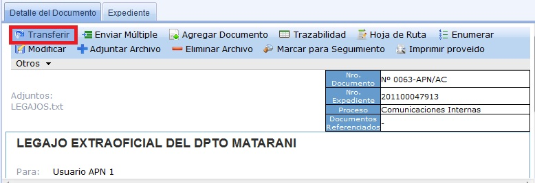
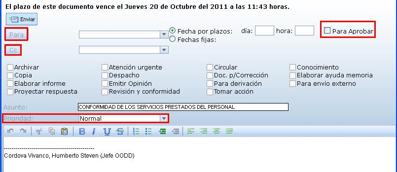

Transferir
Seleccionamos Transferir en caso de que la otra persona a la que enviará el documento tomará acción y tendrá la propiedad del documento. (*)El Transferir, te permite enviar sólo a una sola persona y cuando se transfiere desaparece de tu Bandeja.

Al seleccionar en Transferir, muestra la siguiente pantalla: En donde tenemos la opción de Para, que permite enviar sólo a una persona. La opción CC, que permite enviar a varios usuarios. Además, tenemos Prioridad en donde encontramos( Baja, Normal, Urgente, Muy Urgente).Finalmente, puedes ingresar alguna descripción si así lo considere y seleccionamos en Enviar.
NOTA: Marcamos la casilla "Para Aprobar", cuando se necesite la aprobación de la alta Dirección en los siguientes tipos de documentos como: Oficio, Carta, Resolución.

Created with the Personal Edition of HelpNDoc: Easily create iPhone documentation